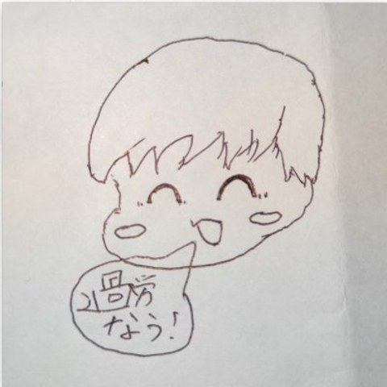
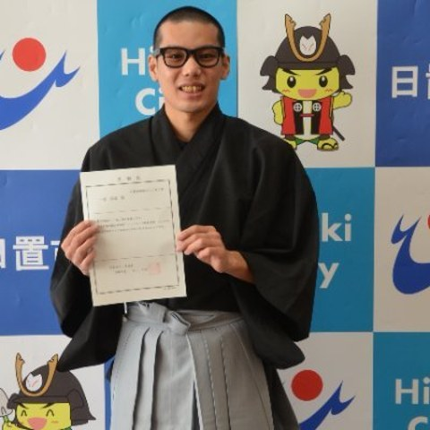
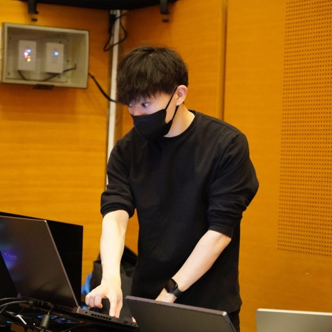

Computational analysis of yōkai folklore
from large-scale archives, and
a generative-AI-mediated platform
for sharing and making sense of
contemporary inexplicable experiences
Computational analysis of yōkai folklore from large-scale archives, and a generative-AI-mediated platform for sharing and making sense of contemporary inexplicable experiences
We analyze the more than 35,000 records of the Database of Folktales of Mysterious Phenomena and Yōkai (International Research Center for Japanese Studies) computationally, re-reading the distribution, biases, and types of transmitted tales. In parallel, we use yōkai as an interface through which people today can externalize and look at their own worries and unease, building and exhibiting an apparatus that generates a name and an image from a personal account. The team is based at the University of Tsukuba and Japan Women's University and is supported by the Nippon Foundation HUMAI Program.
View More


For inquiries about the research, collaboration, or press, please contact us below.
Get in Touch